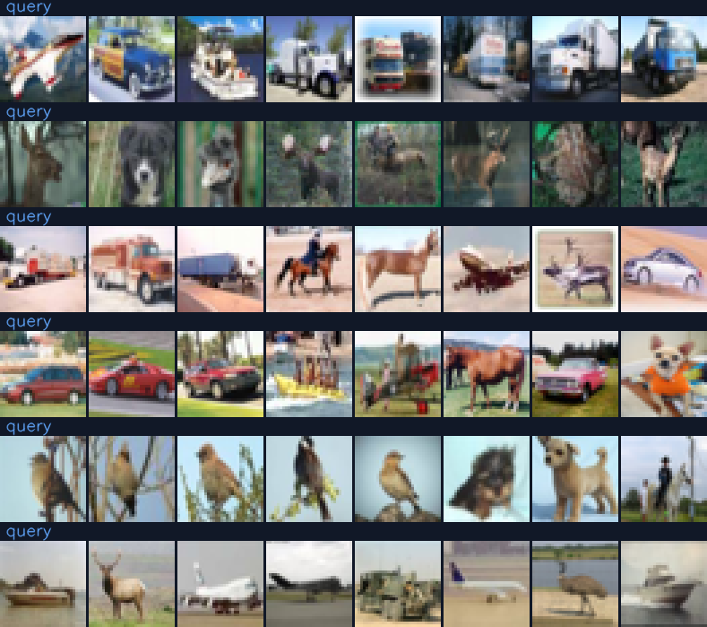
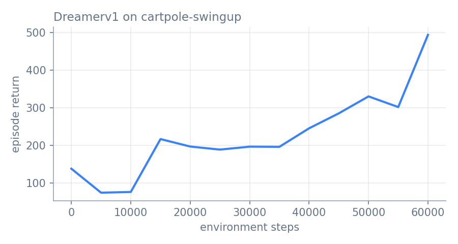
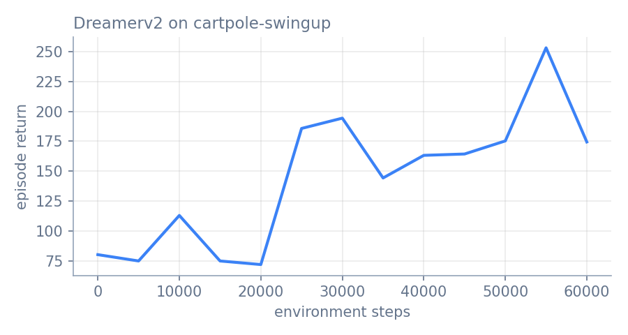
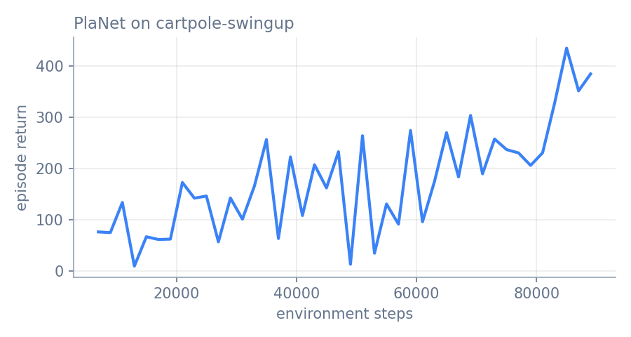
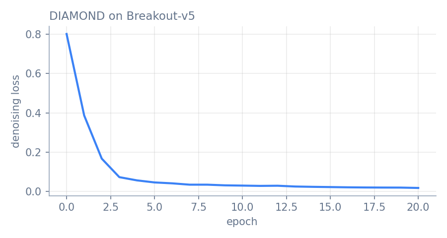
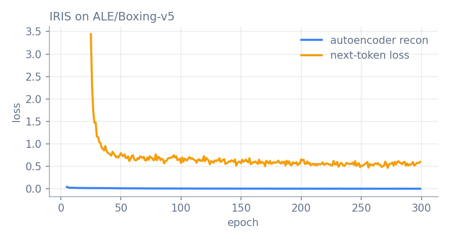
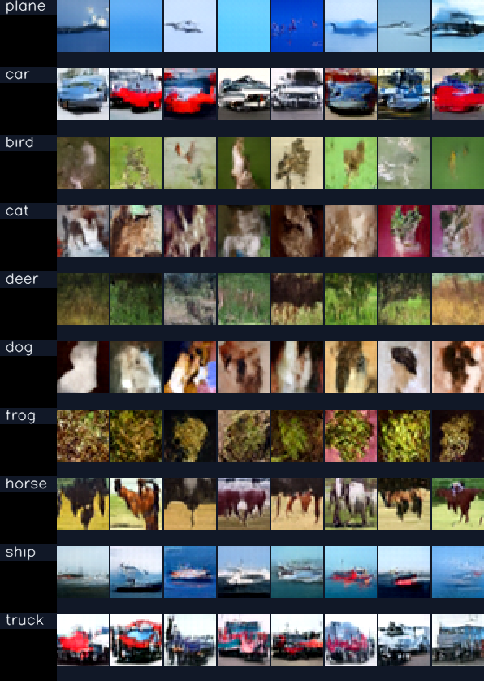
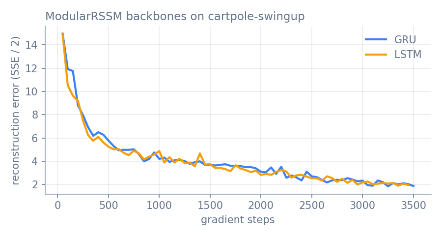

Gallery#
What every model in Simulusion looks like in action. Each clip below was produced by
the scripts in demos/,
trained from scratch on a single laptop GPU (RTX 3050, 4 GB) for one to two
hours. They show what the library does in a short budget, not the paper results,
which need far more compute. Every section ends with the commands that
reproduce it.

I-JEPASelf-supervised image features, learned without pixels or labels.How to read the world-model clips#
Most clips put the real environment on the left and the world model on the right. The model is shown a few real frames (“observed”), then its observations are cut off and it predicts every later frame on its own (“imagined t+k”), given the same actions the agent takes in the real environment. Nothing on the right is copied from the left: wherever the two halves drift apart is exactly where the model is wrong.
Dreamer#
Dreamer learns a recurrent state-space model of the environment from pixels, then trains an actor-critic purely on imagined trajectories. Here it is on the DeepMind Control cartpole swing-up task. In 60k environment steps (about 95 minutes) its evaluation return rose from about 75 to 493, out of a maximum of roughly 880: the policy swings the pole up but cannot yet balance it. The world model tracks the real cart for about ten imagined steps before it drifts.

python demos/dreamer_demo.py train --env cartpole-swingup --steps 60000
python demos/dreamer_demo.py record
DreamerV2 swaps in symlog two-hot reward and value heads and a balanced KL.
On the same budget its return rose from about 75 to between 165 and 250. It
trained at batch 32 rather than 50, the most that fit beside MuJoCo’s renderer
on a 4 GB GPU. Train it with create_model("dreamer-v2"), or:

python demos/dreamer_demo.py train --algo dreamer-v2 --batch-size 32 --run demos/runs/dreamer_v2
python demos/dreamer_demo.py record --run demos/runs/dreamer_v2
See Dreamer: Model-Based RL with Latent Dynamics for the method and the full API.
PlaNet#
PlaNet has no policy network. At every step it searches over action sequences with the cross-entropy method inside its learned latent model and executes the first action of the best plan. Same task as Dreamer, so the two are comparable: in 75 minutes its evaluation return rose from 76 to 435, and the recorded planner episode below scores 388.

python demos/planet_demo.py train --minutes 75
python demos/planet_demo.py record
See PlaNet.
DIAMOND#
DIAMOND’s world model is a diffusion model: it generates each next Atari frame by denoising, conditioned on the previous four frames and the action. The agent is trained entirely on frames the model generates. After 21 epochs (about 1.75 hours) the model renders Breakout’s walls, bricks, score and paddle convincingly, but it has not yet learned the ball, which is one or two pixels at 64x64; small, fast objects are the last thing it picks up. The agent, trained on those frames, is correspondingly weak.

python demos/diamond_demo.py train --epochs 21
python demos/diamond_demo.py record
To drive the model yourself with the keyboard, run
simulusion play --model diamond -c demos/runs/diamond/checkpoint_20.pt --game Breakout-v5
and press TAB to switch between the real game and the dream. See DIAMOND.
IRIS#
IRIS compresses every frame into 16 discrete tokens with a VQ autoencoder, then models the game as a sequence of tokens and actions with a Transformer. The policy learns from Transformer imagination only.
Trained on Atari Boxing for 300 epochs (60,000 real environment steps, in stages on the 4 GB laptop GPU), the world model keeps the ring, both boxers and the scoreboard through 16 tokens per frame, and the policy has learned to close in and trade punches. In a full two-minute round in the real emulator it led 29-21 with 24 seconds left and lost 31-32: level with the game’s built-in opponent, not yet better. The paper reaches about +70 with several times more policy training per epoch.

python demos/iris_demo.py train --game ALE/Boxing-v5 --run demos/runs/iris_boxing --until-epoch 300 \
--autoencoder-steps 200 --transformer-steps 200 --actor-critic-steps 50 --actor-critic-batch 64
python demos/iris_demo.py record --run demos/runs/iris_boxing --policy-steps 2000
The demo keeps the paper’s architecture and its schedule (autoencoder alone
until epoch 25, the policy from epoch 50). To fit a 4 GB GPU the policy takes
50 updates per epoch instead of 200, because each one imagines 20 frames token
by token. --resume continues an interrupted run and --until-epoch makes it
stop at the same epoch however often it was restarted. See IRIS: Transformers for Sample-Efficient World Models.
Genie#
Genie learns from gameplay video alone, with no actions recorded. A latent action model discovers a small vocabulary of “controls” from how consecutive frames differ, and a MaskGIT dynamics model generates the next frame given one. Trained here for 6,000 steps (about 1.5 hours) on Sonic from the TinyWorlds dataset.
At this budget Genie reproduces the scene layout, but the scene stays largely
still, and its 8 latent actions are not yet distinct controls: played from the
same frame, they produce nearly the same video. Learning separable actions is
the part of Genie that needs the most training. Frames are sampled at
temperature 0.3 (record --temperature).
python demos/genie_demo.py train --steps 6000
python demos/genie_demo.py record
See Genie: Generative Interactive Environment.
DiT#
A Diffusion Transformer (DiT-S/4, 33M parameters) trained class-conditionally on CIFAR-10 for 40 epochs, about two hours, and sampled with classifier-free guidance at scale 4.

python demos/dit_demo.py train --epochs 40 --batch-size 64
python demos/dit_demo.py record
See DiT: Diffusion Transformer and Diffusion Models.
ModularRSSM#
ModularRSSM builds a world model from interchangeable parts: an encoder, a
decoder and a recurrent backbone. The demo trains the same encoder and decoder
with a GRU and with an LSTM backbone on identical data, then lets both predict
the future.

python demos/modular_rssm_demo.py train --minutes-per-backbone 25
python demos/modular_rssm_demo.py record
See Modular RSSM.
I-JEPA#
I-JEPA learns image features without reconstructing pixels and without labels: it predicts the representations of masked image blocks from a visible context block. A ViT-Tiny trained for 30 epochs on CIFAR-10 (about an hour) shows what that buys: classifying test images by their 20 nearest training images in feature space scores 41.1%, against 29.6% for the same network at random initialisation (chance is 10%).
python demos/jepa_demo.py train --epochs 30
python demos/jepa_demo.py record
Reproduce everything#
python demos/run_all.py # trains and records every demo, about thirteen hours on a 4 GB laptop GPU
python demos/build_gallery.py # copies the media into docs/source/_static/gallery
Each demo runs on its own, one after another: several hold gigabytes of replay
data in RAM and most of a 4 GB GPU. See
demos/README.md
for details and per-demo options.